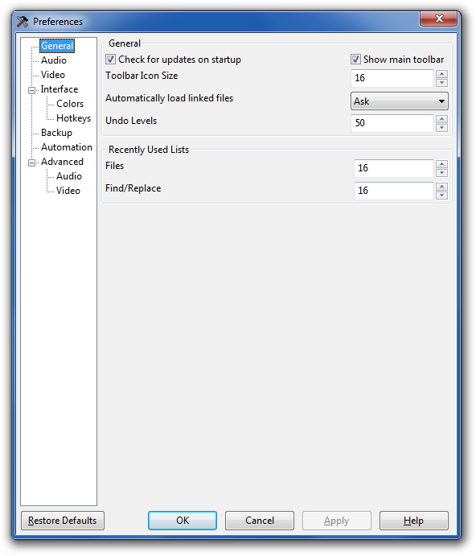
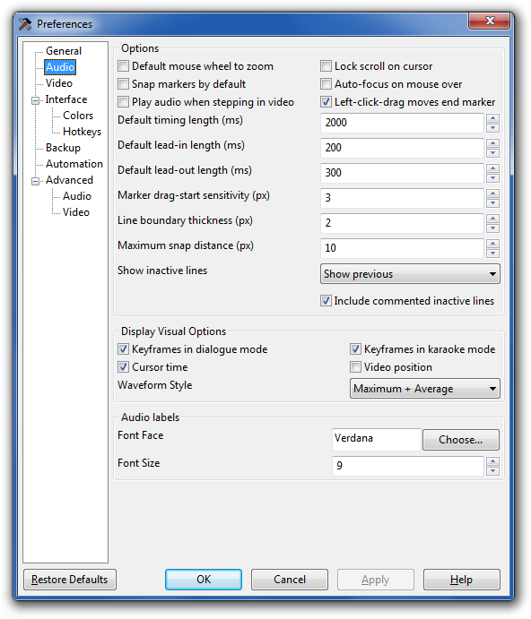
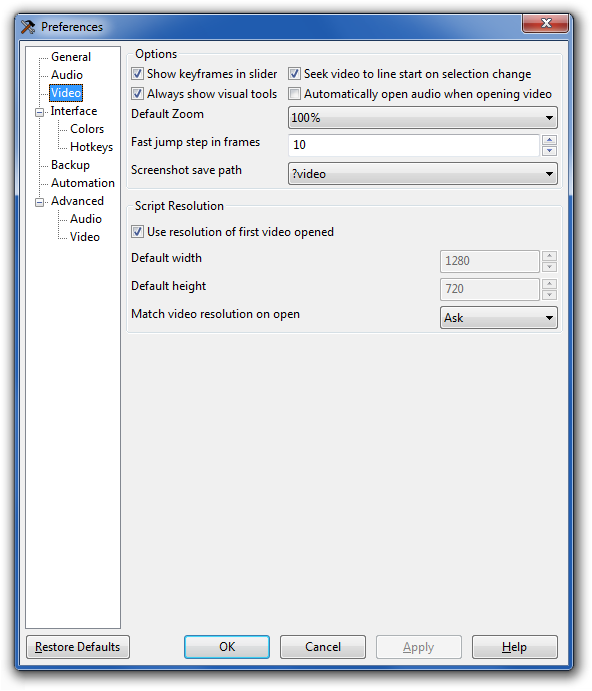
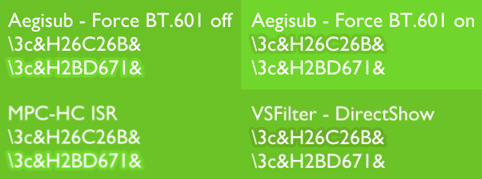

Aegisub / Options
Aegisub is highly customizable and hence has a large amount of user-changeable options. These are available in the options dialog box, found in the View menu. This page is a reference of all the available options.
Aegisub stores all its configuration in a plain text file called config.json which by default is stored in the ?user directory. If you want to reset Aegisub to its default options without reinstalling the program, you can just delete config.json and restart Aegisub.
General
 - Auto Check for Updates
- If enabled, Aegisub will periodically check whether there is a newer version available, and alert you if there is. Requires a working connection to the internet.
- Show main toolbar
- If disabled, Aegisub's main toolbar is hidden.
- Toolbar icon size
- The size of icons to use in all of the toolbars in Aegisub. Currently the only valid values are 16 and 24.
- Automatically load linked files
- Whenever you save a script, Aegisub also stores some information about what video, audio and timecodes files you had open while working on it, inside the script itself. This option decides what Aegisub does with these files that are "linked" to the script when opening it. If set to "ask", Aegisub will ask you if you want to load linked files. If set to "never", Aegisub will never load linked files, and likewise if set to "always", Aegisub will always try to load linked files (and report an error if the file(s) were not found).
- Undo levels
- The maximum number of changes that can be undone. The higher this value, the more memory Aegisub will use.
- Recently Used Lists
- Maximum number of items to remember for all of the various lists of recently used items in Aegisub. The memory impact from increasing these is trivial, but larger lists may get unwieldy to use.
Audio
 - Lock scroll on cursor
- When enabled, the audio waveform view will automatically scroll to follow the playback cursor if it gets too close to either of the edges.
- Snap markers by default
- When enabled, Aegisub will default to snapping audio markers to other markers in the audio display (such as keyframes and the start or end times of other lines) when moving them by clicking or dragging them if they are close enough. Snapping can be toggled on or off by holding down shift.
- Default mouse wheel to zoom
- When enabled, the mouse wheel will zoom the audio display horizontally by default, and scroll the audio display when Ctrl is held down. If disabled, this is reversed.
- Auto-focus on mouse over
- If enabled, moving the mouse cursor over the audio waveform will automatically give it focus (as opposed to requiring a click).
- Play audio when stepping in video
- When enabled, frame stepping plays the audio for that frame.
- Default timing length
- The default length of a new untimed line, in milliseconds.
- Default lead-in length
- Default lead-out length
- The duration added to the start of a line by the "add lead-in" and "add lead-out" functions. Also used in (and set by) the timing postprocessor.
- Marker drag-start sensitivity
- The distance in pixels that a marker must be dragged for it to register as a drag. Higher values reduce the chance of accidental changes, at the cost of worse responsiveness.
- Left-click-drag moves end marker
- When enabled, left clicking will set the start time of the line to the clicked point, then set the end time of the line to the point dragged to, making it possible to time a line with a single click-drag movement. When disabled, left-click-drag always updates only the start time of the line, as right-click does with the end time.
- Line boundary thickness
- The width, in pixels, of the line start and end markers.
- Maximum snap distance
- Maximum distance to snap markers to other markers, in pixels.
- Show inactive lines
- Controls how lines surrounding the currently selected line are displayed in the audio waveform. "Don't show" will only display the current line. "Show previous" will show the previous line (in the grid, not chronologically) in gray in addition to the current line. "Show next and previous" will show the lines before and after the current line (in the grid, not chronologically). "Show all" will show all lines in gray in addition to the current line.
- Include commented inactive lines
- If disabled, commented lines will be skipped over when picking which inactive lines to show in the audio display (making "Show previous" into "Show last uncommented line before this line", and so on).
Display Visual Options
- keyframes
- If enabled, lines marking the positions of keyframes in the video will be drawn on the audio waveform when in dialogue timing mode (the default).
- Karaoke keyframes
- If enabled, lines marking the positions of keyframes in the video will be drawn on the audio waveform when in karaoke timing mode.
- Draw cursor time
- If enabled, a timestamp showing the time since the start of the file will be drawn near the top of the audio waveform cursor.
- Video position
- If enabled, a line is drawn in the audio display marking the start time of the current video frame.
- Waveform style
-
Selects which of the waveform rendering styles to use
- Maximum + Average
- The waveform is two-tone, indicating both the maximum value of a sample within a pixel's time range, and in a brighter color, the average value of all samples within the time range.
- Maximum
- The waveform displays only the maximum value, as previous versions of Aegisub did.
Audio labels
These options control the appearance of labels drawn in the audio display for karaoke syllables.
- Font Face
- The font to use for audio labels.
- Font Size
- The font size to use for audio labels.
Video
 - Show keyframes in slider
- When enabled, Aegisub will draw keyframe markers on the video seek slider.
- Seek video to line start on selection change
- When enabled, whenever the active line is changed Aegisub will automatically seek the video to the first frame of the new line. Note that this can by done manually by double-clicking on the grid, or by pressing Ctrl-1.
- Always show visual tools
- When disabled, the visual typesetting tools are only rendered when the mouse is over the video display.
- Automatically open audio when opening video
- When enabled, when you open a video file which also has audio data, Aegisub will automatically load the audio.
- Default zoom
- The default video zoom level. Useful if you have a very big or very small screen.
- Fast jump step in frames
- Decides how big "jumps" Aegisub will make when you use the fast seek feature (Alt-rightarrow and Alt-leftarrow). Measured in frames.
- Screenshot save path
- Decides where Aegisub should save screenshots. The default is
?video, which means they are saved to wherever the video is, but you can change it to any path you like. Aegisub path specifiers are supported; another option directly available in the dropdown is?script, which is wherever the script is.
Script resolution
- Use resolution of first video opened
- When enabled, Aegisub will automatically set the script resolution to the video resolution if you open a video and the script resolution is not yet set. If this is disabled, Aegisub instead sets the script resolution to a configurable default.
- Match video resolution on open
- Controls what Aegisub will do about script resolution when you open a video. If set to "never", Aegisub will do nothing if the script resolution doesn't match the video resolution. If set to "ask", Aegisub will ask you if you want to change the script resolution to match the video resolution if they don't match. If set to "always", Aegisub will always change the script resolution to match the video resolution automatically. "always" is not recommended since it just changes script resolution without resampling anything, so it will most likely break existing typesetting.
Interface
- Enable call tips
- When enabled, Aegisub will detect when you are writing an override tag and display a small box with a brief reference of the syntax of the tag in question until you close the tag. This is called a "call tip" and the feature may be familiar to users of various programming IDEs.
- Overwrite in time boxes
- Controls the behavior of all time edit boxes in the program. By default, all time edit boxes in Aegisub behave like as if you had pressed the Insert button, so every digit you type overwrites what is already there, and you cannot erase numbers that are already there, you have to overwrite them. Unticking this box disables this behavior and makes the time edit boxes behave just like normal text edit boxes (almost).
- Enable syntax highlighting
- Enables or disables syntax highlighting of override tags in the main edit box.
- Path to dictionary files
- Decides where Aegisub will look for dictionary files for its spellchecker and
thesaurus. By default it looks in
?data/dictionaries, but if you have your own dictionaries in the correct format somewhere else, feel free to point Aegisub there instead. - Font
- Decides the font and fontsize used for the subtitle edit box and other edit boxes.
- Allow grid to take focus
- When enabled, the subtitles grid acts as its own area of the program and it can have focus, just like the audio or the video can, and while it does you can use the arrow keys/mouse wheel to scroll around it etc. On the other hand, if you disable this option, the focus will stay where it was before whenever you click in the grid. This means you can't use keyboard shortcuts in the grid anymore, but on the other hand it means you can click in the grid to go to a line without losing the audio focus and so on. Use at your own discretion.
- Highlight visible subtitles
- When enabled, all subtitle lines that are currently visible in the video frame (or at least should be visible; Aegisub does not account for alpha and such trickery in this case; it cares only about the timing of the line) will be highlighted in the grid with a special background color (see the "Line in frame background" option below).
- Hide overrides symbol
- The character that will be shown instead of override blocks if tag hiding is active. Note that despite the name, this can be more than one character if you so desire.
- Font
- Decides the font and font size of all text in the grid.
Colors
Audio Display
- Play cursor
- The color of the playback cursor.
- Line boundary start
- Line boundary end
- Line boundary inactive line
- The respective colors of the various line boundary markers.
- Syllable boundary
- The color of a syllable boundary line in karaoke mode.
Color Schemes
Controls the color scheme used for the waveform/spectrum and some of the UI elements. Aegisub currently does not have a UI for editing the color schemes or creating new ones, but if you're feeling adventurous they can be found in config.json.
Syntax Highlighting
- Normal
- The color of normal text.
- Brackets
- The color of brackets that start/end override blocks.
- Slashes and parentheses
- The color of backslashes and parentheses within override blocks.
- Tags
- The color of tag names within override blocks.
- Parameters
- The color of parameters to override tags.
- Error
- The error color for invalid syntax within an override block.
- Error background
- Background color for errors.
- Line break
- Color for \N, \n and \h outside of override blocks.
- Karaoke templates
- Color for karaoke templater blocks on template lines.
Subtitle Grid
- Standard foreground
- Standard background
- The normal color of lines in the grid. "Foreground" is the text color, and "Background" is obviously the background color.
- Selection foreground
- Selection background
- The color of selected lines in the grid.
- Comment background
- Selected comment background
- The background color of commented-out lines and selected commented-out lines, respectively.
- Collision foreground
- The text color of lines whose timings overlap with the currently active line.
- Line in frame background
- The background color of lines currently visible in the video frame.
- Header
- Left column
- Active line border
- Lines
- The color of the grid lines and fixed columns/headers.
Hotkeys
This page lists all hotkeys currently set in Aegisub, and allows you to add, remove or change them.
Hotkey Contexts
Aegisub supports setting different hotkeys depending on what part of the program has focus.
The "Default" group is for hotkeys which should work regardless of what in Aegisub currently has keyboard focus. Hotkeys set in Default are overridden by the more specific categories when applicable.
The "Always" group sets hotkeys which are enabled by Medusa mode, which apply everywhere in the program and override all other keypresses, including ordinary typing in edit boxes.
All other hotkey contexts should be self-explanatory.
Setting hotkeys
To modify a hotkey, first click on the row to select it, then click on the hotkey field in the row, then press the key(s) that should trigger the command. Accept the new hotkey by clicking on another row.
To add a new hotkey, select the context you want to add the hotkey to, then click the New button. There is currently no list of commands available, but between the existing hotkeys and the auto-complete you can probably guess the command name for the thing you want to do. Everything on any of the menus or any of the toolbars except the subtitles edit box toolbar has a command.
Backup
Automatic Save
- Enable
- If enabled, Aegisub will periodically save a copy of the script you are working on to the autosave path.
- Interval in seconds
- How often should Aegisub autosave.
- Path
- Decides where to save autosaved copies of scripts you are working on. By
default set to
autosavein your Aegisub?userdirectory (see the Aegisub path specifiers page for details). - Autosave after every change
- If enabled, Aegisub will save the file after every change made to it. Note that this currently causes some problems with the undo system.
Automatic Backup
- Enable
- If enabled, Aegisub will save a backup copy of each script you open,
immediately on opening it. By default, it is saved to
?user/autoback/, but this can be changed (see below). - Path
- Decides where to save automatic backup copies of scripts. By default set to
autobackin your Aegisub?userdirectory.
Automation
- Base path
- A base directory where you put non-autoloaded automation scripts. Used only for saving paths to script files in the subtitles.
- Include path
- List of directories where include files and modules are searched for.
Directories are separated with a pipe character,
|. - Auto-load path
- List of directories that are searched for scripts on startup, which are then
automatically loaded. Directories are separated with a pipe character,
|. - Trace level
- When a script sends a message to the debug console it can also specify a trace level. If the trace level of a message is lower than the value given here, the message is not logged. The names given to the levels are only suggestions and they don't have any effect on the execution of the script. (i.e. a "Fatal" level message will not cause the script to terminate.)
- Thread priority
- Priority given to the script execution thread. If you're on a single-core/single-CPU system having this on lower than normal will make other programs more responsive while long-running scripts are active.
- Autoreload on Export
- Automatically reloads the specified sets of scripts when the Exporting dialogue is opened. In that case you will have to enter the Manager window and determine the cause of the error.
Advanced Audio
- Audio provider
-
What backend to to use for loading audio. Currently there are only two methods.
- avisynth (Windows only)
- Uses Avisynth to load audio. All file types will be loaded with DirectShowSource(), except for AVS files which will be opened with Import().
- FFmpegSource
- Uses FFMS2 to load audio. Generally more reliable than opening via DirectShowSource, but slower due to that it has to index files first.
Regardless of this setting, the internal PCM WAV reader will always be tried first for WAV files.
- Audio player
-
What method to use for playing back audio. The options depend on the platform.
- DirectSound (Windows only)
- Uses Microsoft DirectSound to play back audio. This is the best tested and most stable audio player.
- DirectSound-old (Windows only)
- Aegisub's original implementation of the DirectSound player. If you have audio playback problems when using the DirectSound player this one may work better (but probably won't).
- alsa (Linux only)
- Uses the Advanced Linux Sound Architecture to play back audio. ALSA is the native sound architecture of Linux and is not available on any other systems.
- pulse (Linux and other *NIX-like systems)
- Plays sound back through a PulseAudio sound server. This is the least-tested and least likely to work of the audio players, and is only recommended if your audio setup makes non-pulse players undesirable.
- portaudio
- Use the PortAudio API to play back sound. PortAudio has different playback implementations on different platforms. On most Unices it uses Open Sound System (OSS) for output. It is currently the only Windows audio player which supports selecting the output device.
- openal
- Uses the OpenAL API to play back audio. This is the recommended player on OS X. It is normally not included in windows builds due to that it adds an extra dependency for little benefit.
Cache
- Cache type
- Use RAM unless you have very little of it, then use Hard Disk. The cache is not needed and not used when PCM WAV files are opened. If you disable caching, audio playback might become very unreliable.
- Path
- File name
- These options determine where the hard disk audio cache will be located. Only used if cache is set to hard disk. You shouldn't need to change this unless you're low on disk space. For the name, the string expects a printf-style "%i" parameter, that will be replaced with a number. "%02i" is used by default. Don't change that unless you know what you are doing.
Spectrum
- Spectrum quality
- Determines the quality of the audio spectrum display. Higher quality settings result in larger CPU and RAM use. Each consecutive setting uses a bit more CPU than the previous, and double the amount of RAM. For 48 kHz sample rate audio, one minute of audio uses this much memory at the different settings:
0 "regular" - 11 MB 1 "better" - 22 MB 2 "high" - 44 MB 3 "insane" - 88 MB
: The amount of memory used does not depend on the number of channels (Aegisub always works in mono) or the bit-depth (the spectrum is always calculated in 32 bit floating point) of the audio.
- Cache memory max
- The maximum amount of memory to use for audio spectrum caching. The results of the calculations to display the audio spectrum are cached to make scrolling through the audio smoother. The amount of spectrum display that can be cached in an amount of memory depends on the quality setting above. The default cache size of 128 MB results a little less than 6 minutes of audio at 48 kHz in quality 1. If you set this smaller than 5 MB, the default of 128 MB will be used instead. You probably shouldn't set this to more than 1/4 of your amount of physical RAM installed.
Avisynth (Windows only)
- Avisynth down-mixer
- Aegisub can only use mono (single-channel) audio. This option determines which Avisynth function to use to convert audio to mono.
- Force sample rate
- Convert all audio opened to the given sample rate. Forcing the sample rate to the sample rate used by your sound card (rather than having the audio player do it) can potentially improve audio performance and fix playback issues.
FFmpegSource
- Audio indexing error handling mode
-
What to do if an error occurs while indexing an audio track.
- Ignore
- Ignore the error and continue decoding the file. This mode can let you open some corrupted files, but can cause audio/video desync.
- Clear
- Pretend that the track with the error does not exist in the file.
- Stop (default)
- Stop indexing at the point of the error and return all audio data before the error. This is the default due to that corrupted audio packets at the very end of files are fairly common.
- Abort
- Refuse to open the file at all.
- Always index all audio tracks
- If disabled, opening a video file will only index the video tracks, forcing you to reindex the file to open audio tracks from the same file.
Portaudio
- Portaudio device
- What output device to use when playing audio through portaudio.
Advanced Video
- Video provider
-
Decides what method Aegisub should use to load video. What options you have available here depends on how your copy of Aegisub was compiled and what operating system you are running under. The following alternatives exist:
- avisynth (Windows only)
- Uses Avisynth to load video. Versatile, supports loading almost all common formats as well as .d2v files (indexed DVD VOBs) if the correct plugin is supplied. Note that Aegisub can install its own avisynth.dll instead of using your system installation if so desired. Requires Video for Windows decoders for AVI files for best performance. Uses DirectShow for most formats, so it isn't recommended for anything but AVI, d2v and opening Avisynth scripts.
- FFmpegSource
- Uses FFMS2 to load video. Generally the most reliable option.
- Subtitles provider
-
Decides what backend Aegisub uses to render subtitles on the video. If you install additional CSRI renderers such as VSFilterMod or xy-VSFilter (by placing the dlls in the CSRI directory within Aegisub's directory), they will be listed here along with the default ones.
- CSRI/vsfilter_textsub (Windows only)
- Use VSFilter 2.40 to render subtitles. This is the standard subtitle renderer which defines the ASS format used by Aegisub.
- libass
- Use libass to render subtitles. libass is far faster than VSFilter and (somewhat) cross-platform, but unfortunately still has some rendering differences from VSFilter and font-related issues on Windows. If you are doing complex typesetting that will be softsubbed it is a good idea to check your work with both VSFilter and libass, as an increasing number of users are using libass.
- Force BT.601
-
Pretend all YUV videos are BT.601, for VSFilter compatibility.
When VSFilter is used as a DirectShow filter, it always uses the BT.601 color matrix for converting the subtitles from RGB to YUV. This means that if the video uses BT.709 (as most HD video and the occasional DVD does), colors which match the video in Aegisub will not match the video in the player. This option makes Aegisub always convert videos to RGB using BT.601, making the colors shown in Aegisub incorrect, but making it so that if the colors match in Aegisub, they will match in the player.
To make things more exciting, VSFilter will use the correct color space when used as the internal subtitle renderer in MPC-HC, so enabling this option will result in mismatched colors in that case. As the ISR is currently broken in many ways (e.g. it is impossible to accurately position subtitles with it), we recommend not worrying about it for now.
This comparison may make this clearer:

Aegisub now writes what colorspace should be used for RGB -> YUV conversions to the subtitle file, so hopefully this mess will be resolved by renderer improvements sometime in the future.
Avisynth
- Allow pre-2.56a Avisynth
- Support using ancient versions of Avisynth that a few people refuse to upgrade past for various bad reasons.
- Avisynth memory limit
- Frame cache memory limit for Avisynth. Raising this generally does not improve performance and should be done only if you're opening overcomplicated Avisynth scripts directly.
FFmpegSource
- Debug log verbosity
- Set ffmpeg/libav's verbosity level. Only has an effect when you have a debugger attached to Aegisub.
- Decoding threads
- Maximum number of threads to use to decode video, or -1 to choose automatically. Setting this to 1 can fix some decoding issues at the cost of performance. There is rarely any reason to set it to a value other than 1 or -1.
- Enable unsafe seeking
- Disable some of FFMS2's sanity checks when seeking in video. Makes it possible to open some files which FFMS2 cannot seek frame-accurately in.